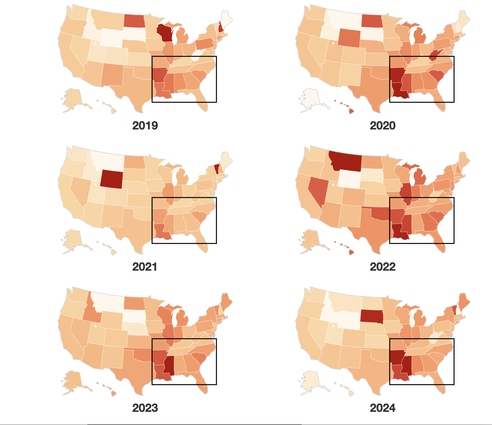

Racial Equity in Lending Was a Promise. It Didn't Last.
A data-driven investigation into how U.S. banks' 2020 racial-equity pledges quietly receded, combining 15M HMDA records, annual reports, and policy shifts to reveal persistent mortgage approval gaps.
Duration: Two months
Mortgage Data • HMDA • Regression • Data Cleaning • R • Python • Policy Analysis • Banking • Civil Rights • Annual Reports • Illustrator • Writing • Scrollytelling